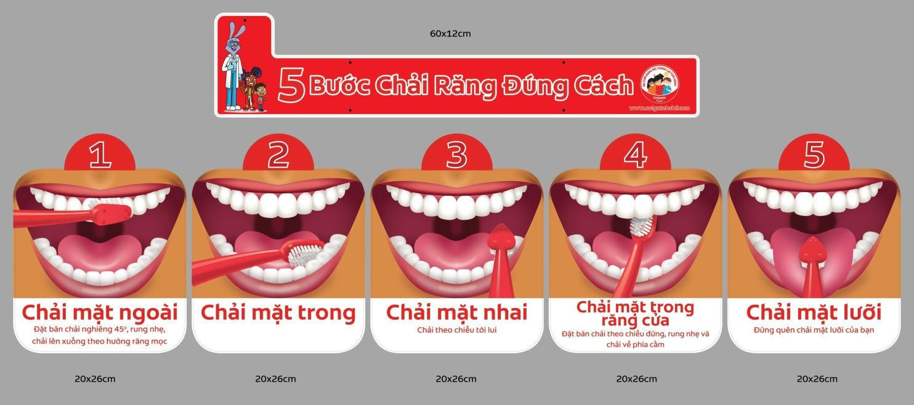
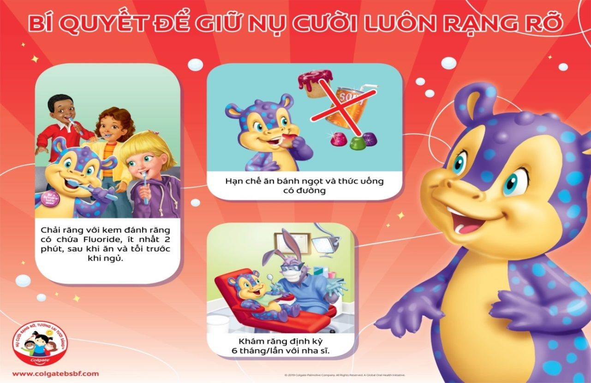

TRƯỜNG TIỂU HỌC YÊN SỞ LÀM TỐT CÔNG TÁC TUYÊN TRUYỀN CHĂM SÓC SỨC KHOẺ RĂNG MIỆNG CHO HỌC SINH
Chăm sóc sức khỏe răng miệng cho học sinh luôn là vấn đề được nhà trường chú trọng quan tâm. Một trong những nguyên nhân dẫn đến sâu răng - viêm lợi đó là vệ sinh răng miệng chưa tốt và chưa đúng cách. Để giúp cho học sinh có hàm răng khỏe đẹp, hơi thở thơm tho… nhà trường đã thường xuyên tuyên truyền, hướng dẫn cách chăm sóc sức khỏe răng miệng cho học sinh.
1. Tác dụng của việc chải răng.
- Chải răng sạch sẽ giữ cho răng và nướu khỏe mạnh, sạch, nụ cười tươi và hơi thở thơm tho.
- Chải răng giúp loại bỏ được mảng bám một màng mỏng chứa vi khuẩn được thành lập một cách tự nhiên trong miệng chống sâu răng.
2. Chải vào lúc nào?
- Muốn có một hàm răng chắc khỏe và một nụ cười rạng rỡ chúng ta phải chải răng đều đặn, tốt nhất là sau các bữa ăn, và ít nhất 2lần/ngày, vào buổi tối trước khi đi ngủ và buổi sáng khi thức dậy.
3. Chải răng như thế nào là đúng?
- Muốn có một hàm răng trắng bóng và một nụ cười rạng rỡ thì điều quan trọng nhất là chúng ta phải chải răng đều đặn và đúng cách. Đánh răng, chải răng là làm mất đi những bựa thức ăn bám quanh răng và các loại vi khuẩn làm ổ gây sâu răng, làm cho hơi thở không có mùi.
- Phải chải răng cả ba mặt răng: Mặt ngoài, mặt trong và mặt nhai (mặt ăn). Các bước chải răng ở các mặt răng ta thực hiện chải 6 lần và cuối cùng là chải lưỡi.
+ Cách đánh mặt ngoài: đặt bàn chải nghiêng một góc 45 độ với hàm răng, chải theo chiều từ chân răng đến mặt nhai với động tác tới lui nhẹ nhàng. Tránh chải răng theo chiều ngang vì nó sẽ làm mòn chân răng. Chải cẩn thận mỗi vùng 2-3 răng và tuần tự như thế cho sạch tất cả các răng.
+ Cách chải mặt trong: đặt lòng bàn chải theo chiều thẳng đứng và dùng đầu bàn chải nhẹ nhàng chải từ trên xuống dưới. Làm sạch lưỡi bằng cách dùng bàn chải, hoặc cạo lưỡi bằng que cạo lưỡi.
+ Cách chải mặt ngoài:
Đặt bàn chải vuông góc với mặt nhai và chải từ răng hàm trong cùng bên trái và nhẹ nhàng, tịnh tiên ra ngời răng cử và ngược lại. Tương tự như vậy chúng ta tiến hành chải cung răng bên trái cho thật sạch.

4. Một số lưu ý khi dùng bàn chải và kem đánh răng.
- Dùng kem đánh răng có chứa hàm lượng flo cao.
- Nên chọn bàn chải có lông mềm, dùng bàn chải trẻ em để chải sạch tất cả các răng một cách dễ dàng hơn.
- Rửa sạch bàn chải sau mỗi khi dùng để nơi thoáng mát rộng rãi không đụng vào bàn chải hay vật dụng khác
- Thay bàn chải khi bắt đầu bị tưa (lúc đó lông bàn chải không còn đứng thẳng nữa) hay khi bị mắc các bệnh nhiễm trùng nên thay bàn chải từ 3- 4 tháng.
- Không nên dùng chung bàn chải với người khác, không sử dụng bàn chải vào mục đích khác ngoài việc đánh răng.
5. Ăn uống thế nào để có hàm răng khỏe, đẹp?
- Hạn chế ăn thức ăn ngọt như bánh kẹo, nước đường; nên ăn các loại rau, củ, trái cây tươi; khi không có điều kiện đánh răng sau khi ăn thì có thể thay thế bằng cách nhai kẹo cao su không đường, vì nhai kẹo cao su giúp miệng tiết nước bọt, hạn chế các mảng bám trên răng.
- Hạn chế ăn vặt và ăn những thức ăn dính, ngọt, dẻo… vì chúng dễ gây sâu răng. Thay vào đó hãy chọn những thức ăn có lợi cho răng như: các hạt, rau tươi, sữa chua; những loại nước có ga có chứa nhiều đường sẽ làm mòn răng, đặc biệt là acid trong các loại nước quả sẽ vô hiệu hóa men răng, giúp vi khuẩn gây viêm, nhất là khi dùng đồ uống có quá nhiều đường và uống vào buổi tối trước khi đi ngủ.
- Thực hiện việc khám răng định kỳ 6 tháng một lần, để được phát hiện và điều trị sớm các bệnh răng miệng.

Qua bài tuyên truyền này mong rằng các bạn học sinh sẽ biết cách đánh răng đúng cách bảo vệ và chăm sóc răng miệng cho mình để có một hàm răng chắc khỏe và một nụ cười rạng rỡ.